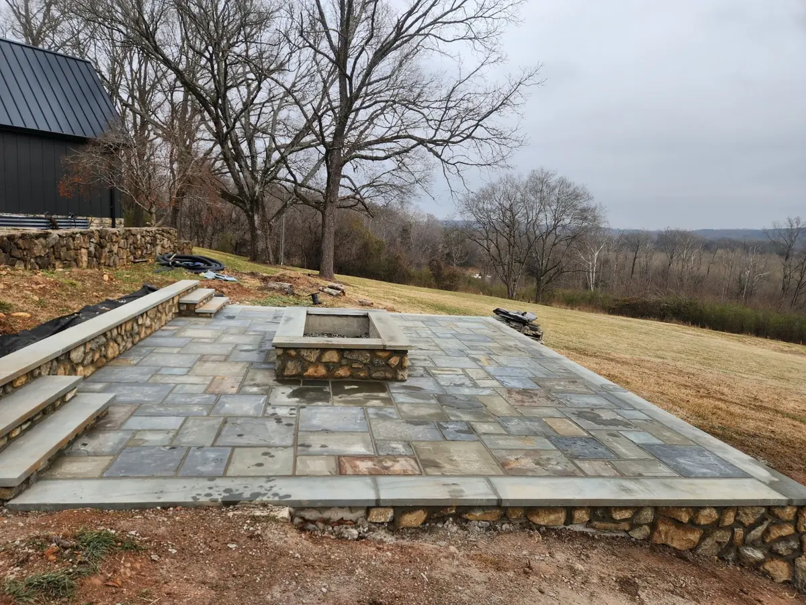
Patios
Paver and natural stone patios designed for real daily use — proper base prep and drainage built in from day one.
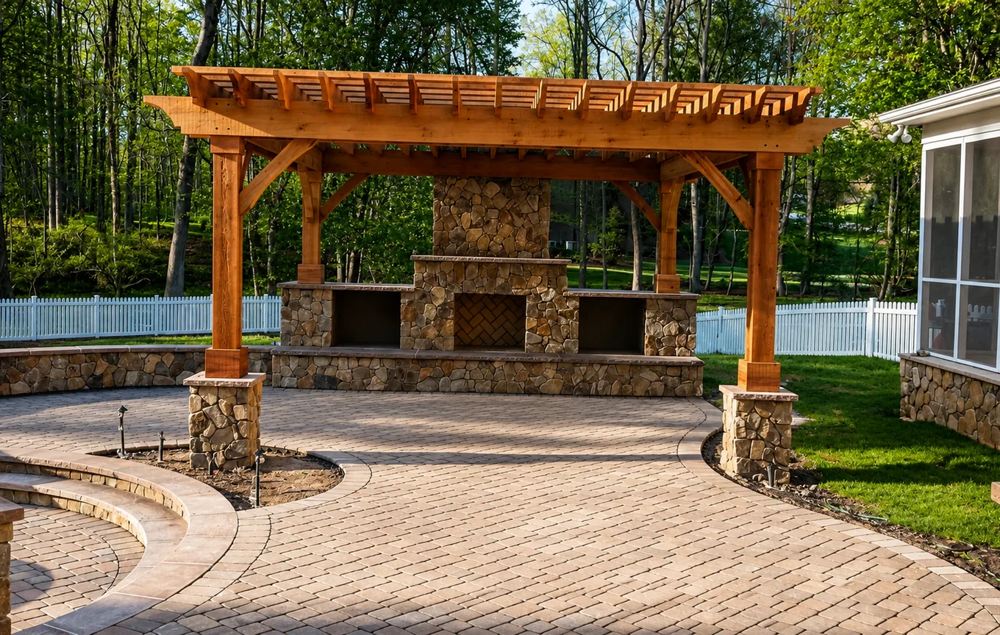
Hardscape & Outdoor Living · Greensboro, NC
Patios, retaining walls, pool decks, driveways, and outdoor kitchens — designed and installed with proper base preparation and lasting craftsmanship.
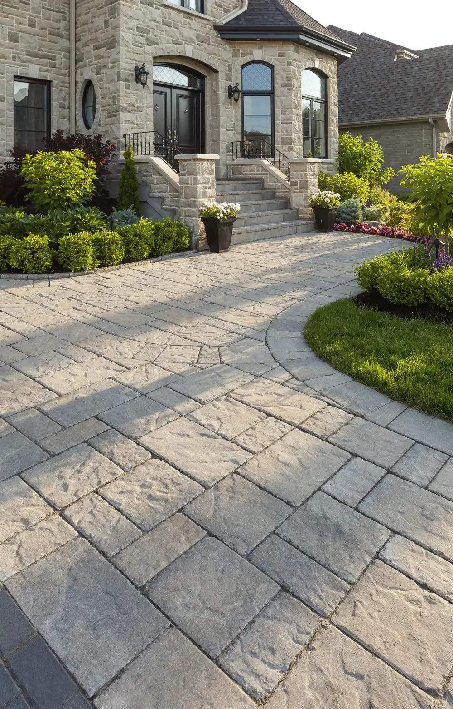
About Us
At Monroy Stone Works, we create high-quality hardscape features that bring structure, beauty, and long-term value to outdoor spaces. From patios and walkways to retaining walls, pool decks, outdoor kitchens, and custom stonework, every project is built with durability and craftsmanship in mind.
We believe great hardscape work starts below the surface. Proper preparation, strong installation methods, and attention to detail are what help every project look clean and perform well over time.
Whether it's a front entry, a retaining wall, a poolside patio, or a complete outdoor living area, our goal is to build spaces that feel solid, look refined, and enhance the way people use their property.
Premium stone and paver materials selected for durability and appearance.
Built with the right preparation, grading, and attention to detail.
Clean finishes, clear communication, and dependable workmanship.
What We Build

Paver and natural stone patios designed for real daily use — proper base prep and drainage built in from day one.
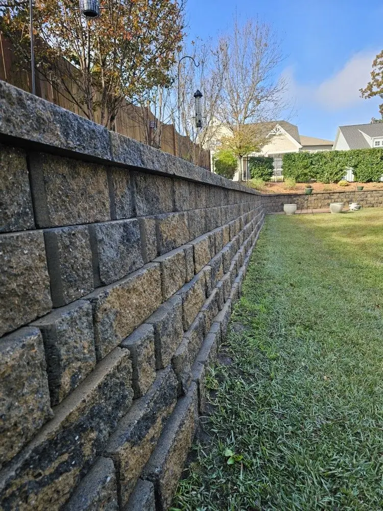
Structural block retaining wall systems engineered to hold grade and manage slope — built for function, not just looks.
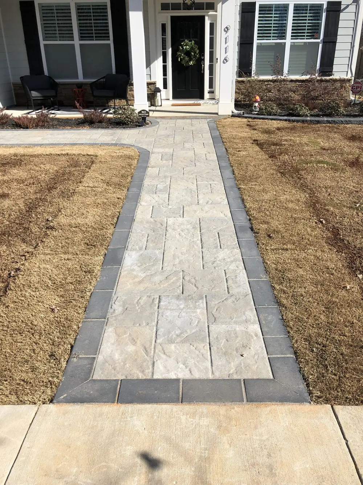
Upscale paver walkways and entry hardscape that set the tone before anyone reaches your front door.
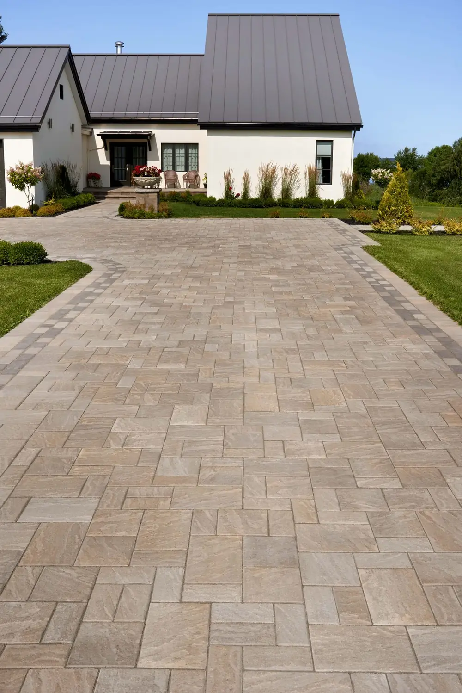
Premium paver driveways engineered to handle daily vehicle weight while giving your home real curb appeal.
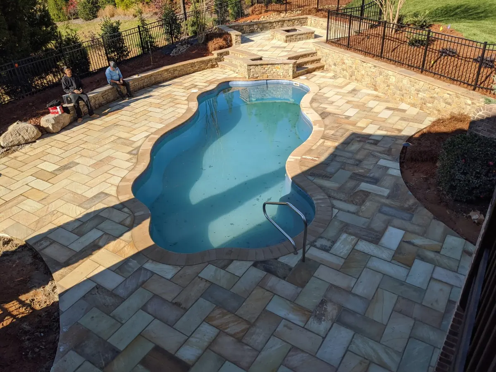
Paver and stone surfaces around the pool — clean, upscale, and built to perform wet or dry.
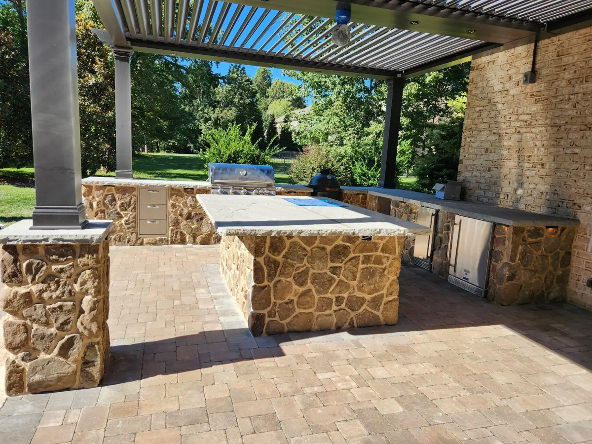
Built-in grill islands, stone counters, and outdoor bar space designed for cooking and entertaining outside.
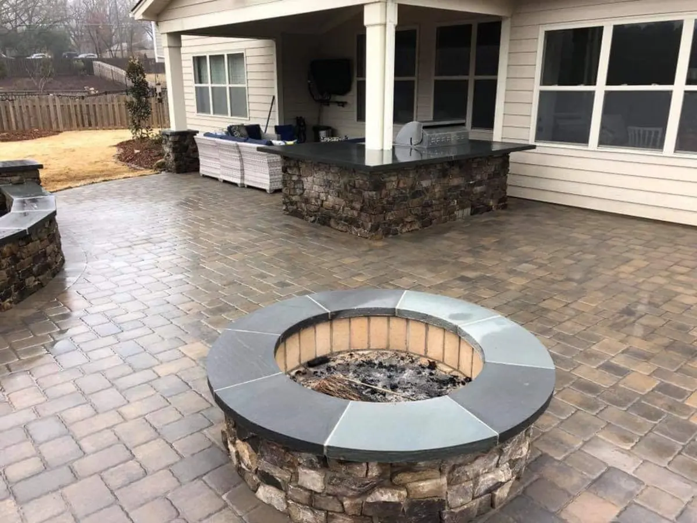
Built-in stone fire pits designed as the natural gathering point of any backyard.
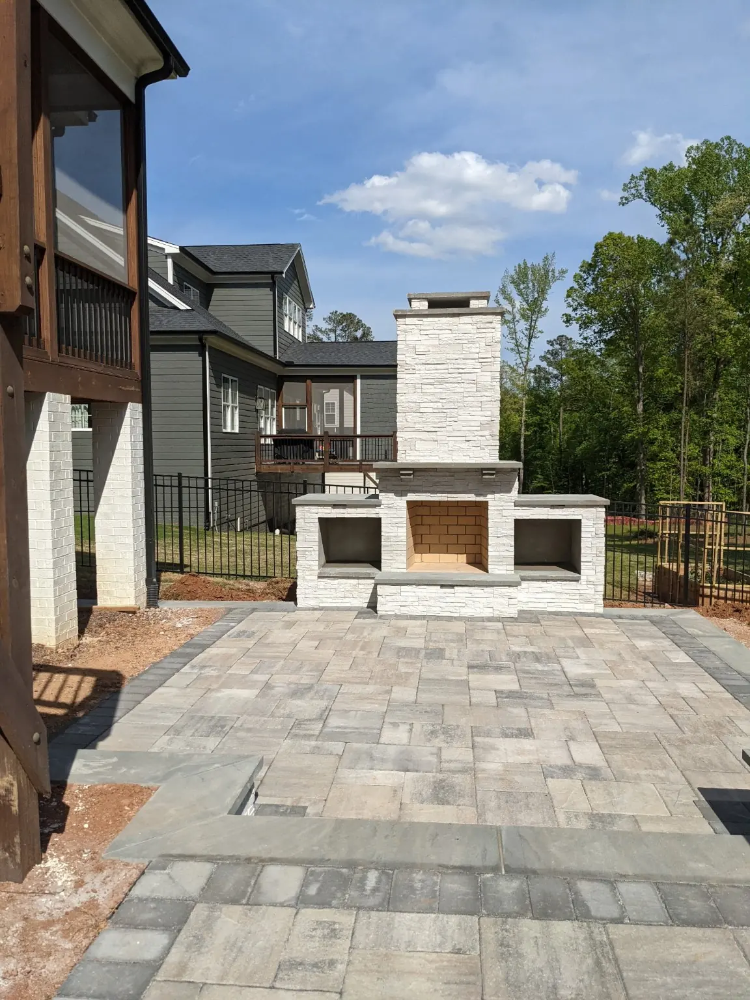
Stone fireplaces built as the focal point of your patio, with wood-storage niches and a finish made to last generations.
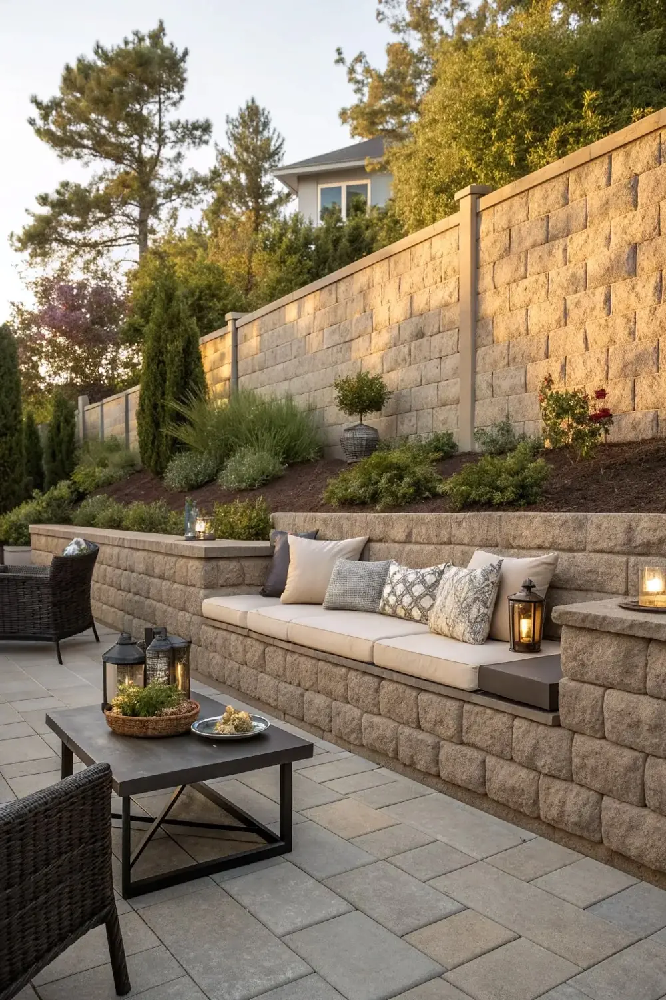
Architectural stone features, seat walls, and custom masonry built to your property's exact layout.
Don't see your project listed? If it involves stone, pavers, or exterior concrete, we probably build it. Ask us.
Completed Projects
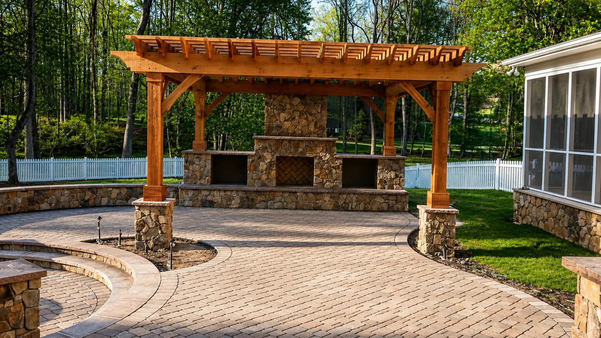
Outdoor Fireplace & Patio — Stone fireplace, paver patio and outdoor living features.
Poolside Hardscape — Stone and paver work around an outdoor pool area.
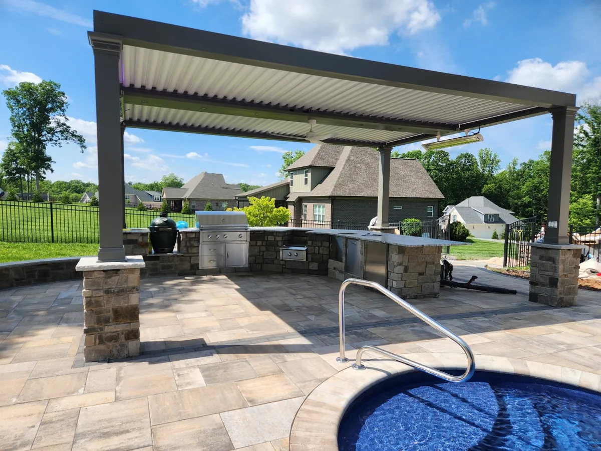
Outdoor Kitchen — Built-in outdoor kitchen integrated into a finished patio space.
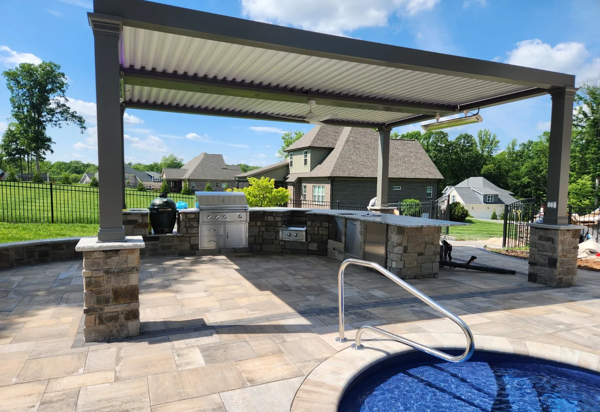
How We Work
We visit your property, review the space, take measurements, and understand your goals before recommending the right solution.
You'll receive a clear plan with material options, layout details, and an itemized quote before any work begins.
Our team completes the project with proper base preparation, drainage, compaction, and clean craftsmanship from start to finish.
Get Started
We'll follow up with a clear, no-pressure quote — no fine print.